Разбираюсь в задаче.
Собираю решение.
Довожу до запуска.
Самостоятельно создаю CRM, AI-агентов, ботов и сайты под реальные процессы. Работаю от разговора с заказчиком и требований до интерфейса, интеграций, проверок и внедрения.
С какой задачей открыть кейс
В каждом кейсе указаны личная работа, доступные материалы и фактический статус.
01 / CRM И ПОЛЬЗОВАТЕЛЬСКИЕ ИНТЕРФЕЙСЫ
Рабочий продукт · поэтапное внедрение
Одна клубная система.
Пять способов работать с ней.
CRM «ЯГУАР» для администратора, тренера, ученика, родителя и киоска посещений. Клиенты, расписание, абонементы и оплаты связаны в одном продукте.
С чего началось
Я сам занимался операционкой клуба: общался с тренерами, обрабатывал обращения, учитывал оплаты и считал выплаты. Из ежедневных задач выросли требования к системе.
Что сделал сам
Разбирал процессы, прорабатывал правила и пользовательские пути. Собирал backend, API, админку и мобильные интерфейсы; занимался проверками и поэтапным внедрением.
Что можно сделать в системе
- Администратору: найти ученика, открыть абонемент, увидеть расписание и оплаты.
- Тренеру: работать со своими учениками и занятиями в мобильной PWA.
- Ученику и родителю: посмотреть расписание, абонемент и информацию о занятиях.
- В киоске: отметить посещение на отдельном устройстве.
Инженерные решения
Backend проверяет права и принадлежность данных клубу. Расписание, посещение, абонемент и расчёт выплаты имеют отдельные правила. Банковская интеграция с «Точкой» создаёт платёжные ссылки и обрабатывает статусы; на демонстрационном стенде реальные платежи отключены.
Django · Django Ninja · PostgreSQL · Redis · React · TypeScript · PWA · HTMX · Docker
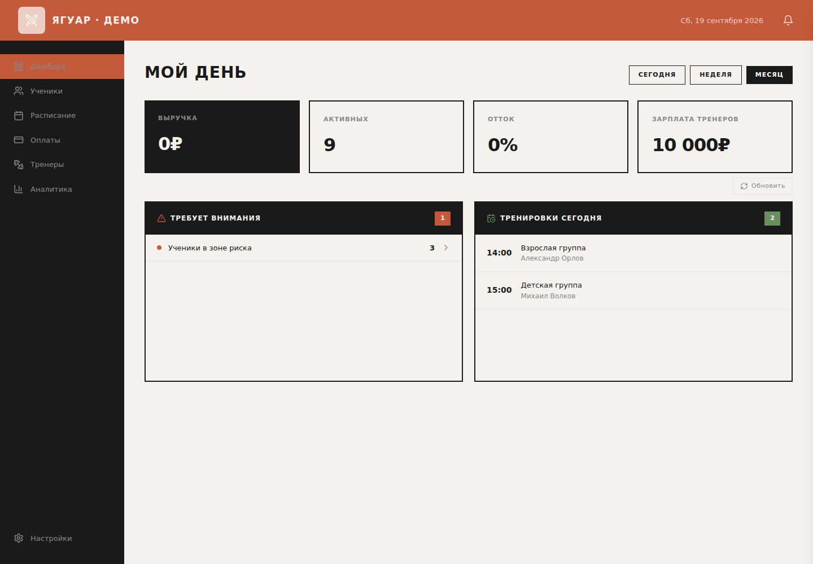
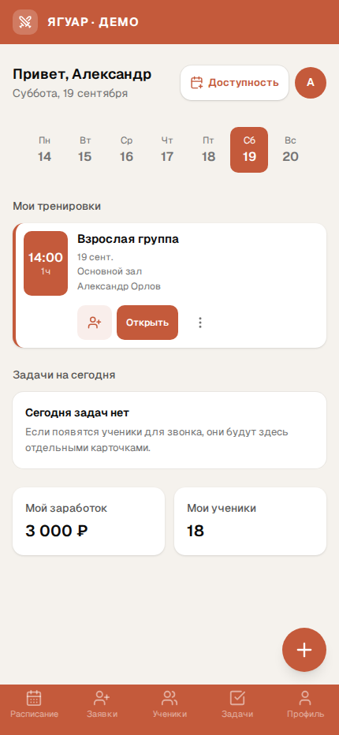
Открыть все 12 экранов CRM
Это скриншоты запущенной CRM с вымышленными именами, контактами, суммами и показателями. Их можно открыть в полном размере и скачать. Скриншоты сняты 19.09.2026.
Desktop-админка
Показатели за период и тренировки на сегодня.
Скачать скриншот

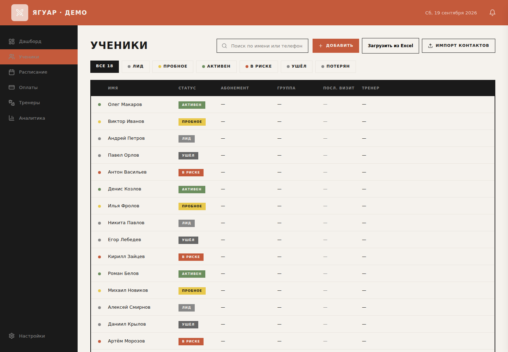
Список учеников, поиск и статусы.
Скачать скриншот

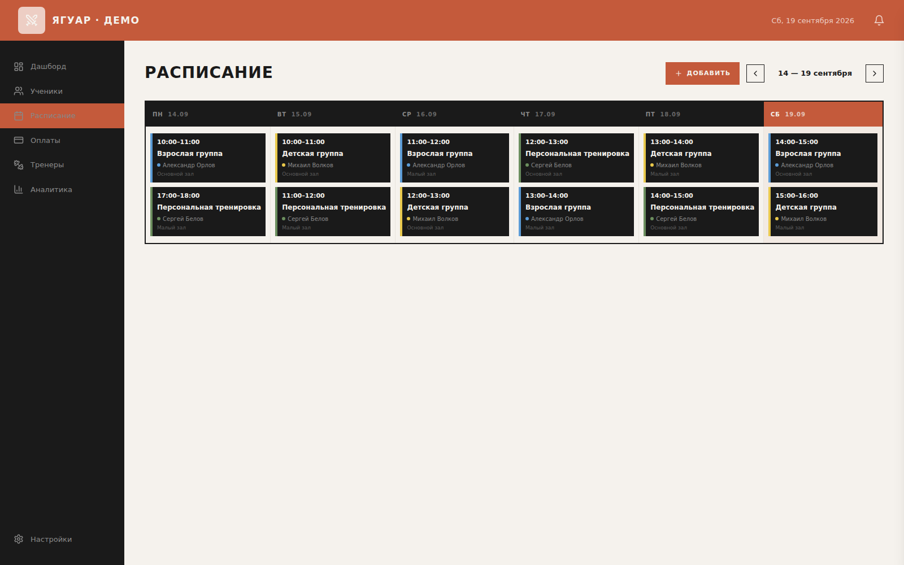
Занятия, тренеры и залы в недельном расписании.
Скачать скриншот

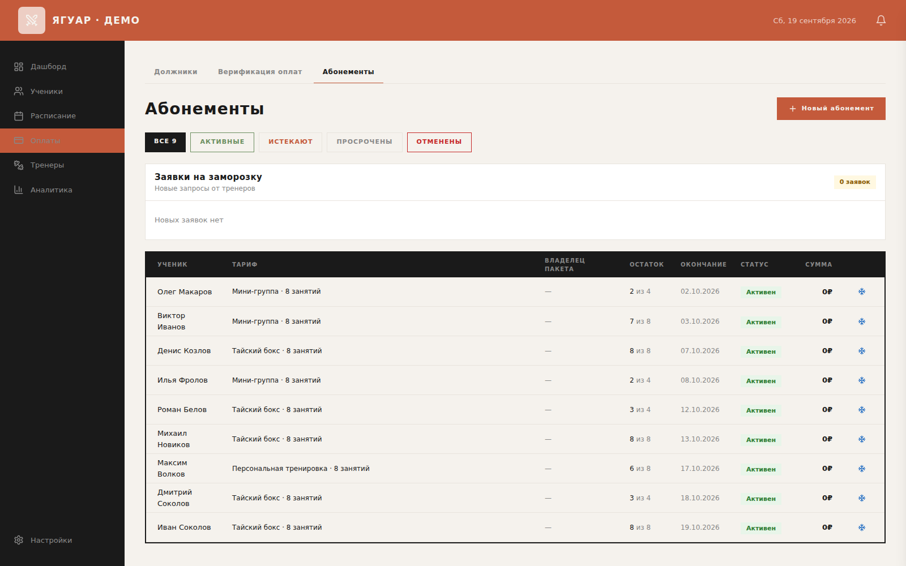
Остатки занятий, сроки и статусы.
Скачать скриншот

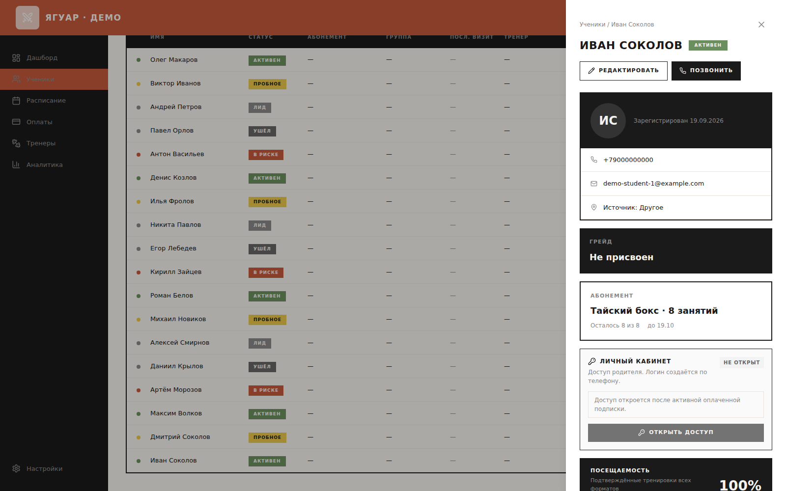
Данные ученика, абонемент и рабочие действия.
Скачать скриншот

Мобильная PWA
Занятия, задачи, ученики и расчётный заработок.
Скачать скриншот

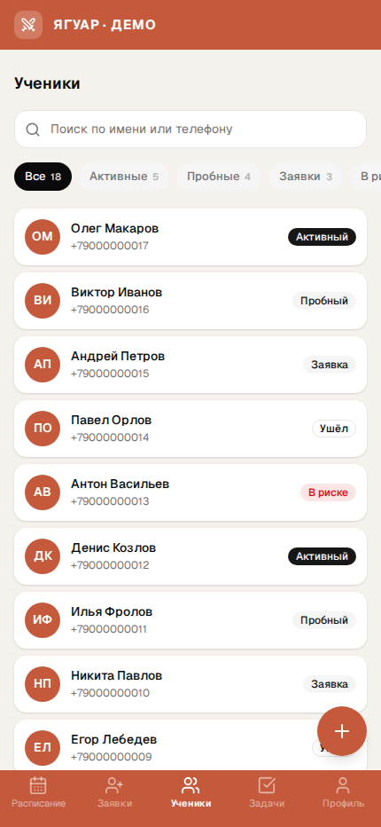
Закреплённые ученики и поиск.
Скачать скриншот

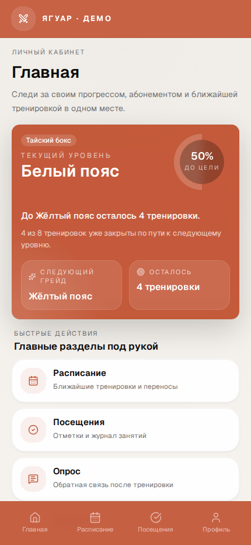
Прогресс и переходы в основные разделы.
Скачать скриншот

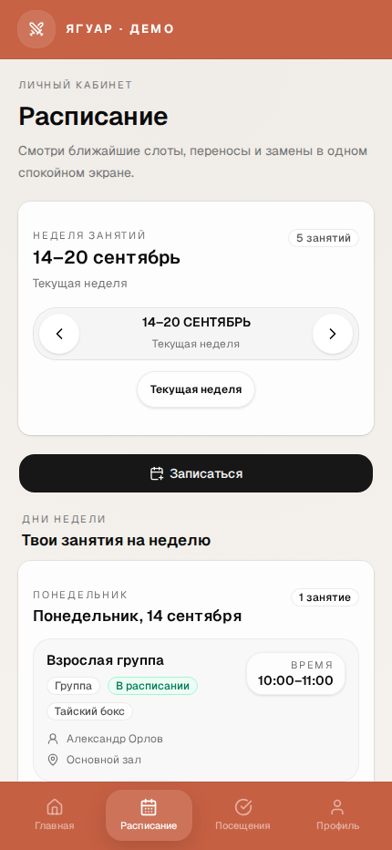
Занятия на неделю и запись.
Скачать скриншот

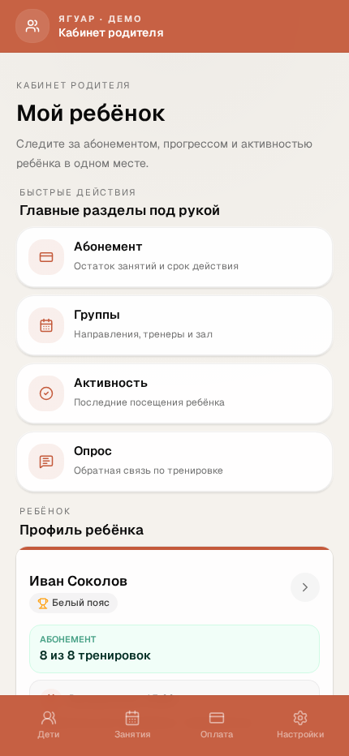
Быстрый доступ к информации о ребёнке.
Скачать скриншот

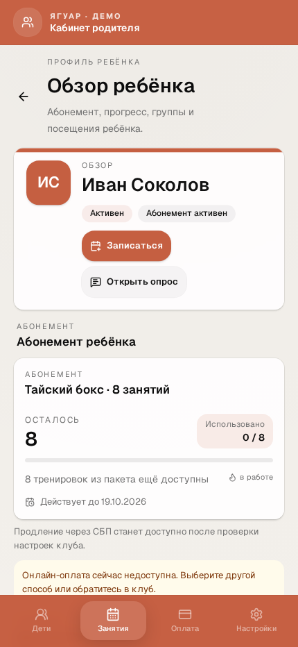
Абонемент, остаток занятий и срок действия.
Скачать скриншот

Киоск чекина
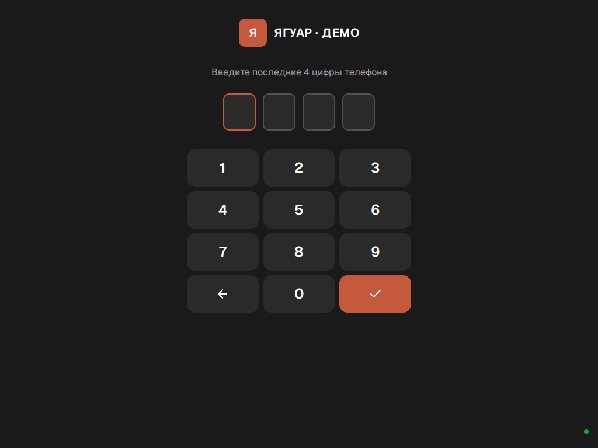
Поиск ученика по последним четырём цифрам телефона.
Скачать скриншот

CRM — рабочий продукт с возможностью развития и рефакторинга. Полное завершение всех модулей и измеренный коммерческий эффект не заявляются.
02 / AI И ИНТЕГРАЦИИ
Реализованная кодовая база
AI-агент, который ведёт
клиента к записи.
agent_p: Telegram-ассистент для салона. Услуга, мастер, время, подтверждение и запись в YClients, с отдельной логикой отмены и переноса.
Задача
Связать свободный диалог с конкретными действиями в CRM. Клиент может менять пожелания, время может стать занятым, а ответы внешней системы могут быть неясными.
Мой вклад
Собирал обработку сообщений, оркестрацию, хранение состояния, интерфейс выбора и интеграцию с YClients. Отдельно прорабатывал проверки перед записью и обработку повторов.
Сценарии в коде
- Консультация по услугам, ценам и мастерам.
- Выбор параметров и подтверждение записи.
- Просмотр, отмена и перенос записи.
- Другое время или мастер, если слотов нет.
- Восстановление при конфликте параметров.
Что защищает результат
Перед созданием система повторно проверяет время. Неизвестная доступность блокирует запись. Отпечаток команды помогает обрабатывать повтор; сообщение об успехе зависит от ответа CRM. Конфликт состояния требует повторного выбора.
Python · FastAPI · LangGraph · Prefect · Supabase / PostgreSQL · aiogram · Vue · YClients API
Посмотреть логику в действии
Автономный объясняющий пример. Все данные вымышленные; реальная запись и внешние API не используются.
Публичный репозиторий содержит заново написанный пример и разбор, а не полный исходник agent_p. Текущая эксплуатация и эффект основного агента не подтверждены этим разбором. Передача оператору в просмотренной версии — заглушка.
03 / TELEGRAM И ФИНАНСОВЫЙ УЧЁТ
Запущен и используется
Оплаты и расчёт выплат.
Из Telegram в понятный учёт.
Отдельный финансовый бот «ЯГУАР»: тренеры передают сведения, человек подтверждает операцию, система сохраняет её и рассчитывает сумму к выплате.
Почему отдельный бот
Учёт требовался в ежедневной работе, пока большая CRM внедрялась поэтапно. Я сделал самостоятельный инструмент, который решает конкретный участок процесса.
Что сделал сам
Собрал диалоги, подтверждение операций, учёт оплат, расчёт выплат и отчётность в Google Sheets. Бот работает независимо от CRM.
Решения для данных
- SQLite хранит канонические записи; Sheets показывает отчётную проекцию.
- Суммы считаются точно в копейках.
- Подтверждение человеком отделено от распознавания сообщения.
- Повторы, исправления и синхронизация имеют отдельные правила и тесты.
Python · aiogram · SQLite · Google Sheets API · Pydantic · pytest · mypy · Ruff
Расчёт выплаты не означает автоматического перевода денег. Это учёт выбранного финансового процесса, не вся бухгалтерия. Публичная копия не подключена к рабочей таблице.
04 / ДОКУМЕНТЫ И БИЗНЕС-ПРОЦЕССЫ
Рабочий контур ИД · снабжение развивается
Строительная CRM.
От документа к комплекту сдачи.
Система для исполнительной документации, согласований и работы с потребностями объектов. Построена на Frappe / ERPNext как модульный монолит.
Работа с заказчиком
Встречался с заказчиком, разбирал процессы компании и уточнял требования. Переводил акты, журналы, согласования и комплекты сдачи в рабочую логику системы.
Личная работа
Разрабатывал CRM, обработку документов и связанные сценарии. Контур исполнительной документации выделен отдельно от материалов и снабжения.
Что охватывает проект
- Акты, журналы и комплект исполнительной документации.
- Статусы согласования и замечания.
- Потребности объектов и обеспечение.
- Разбор PDF / XML / Excel и сопоставление материалов как отдельные блоки.
Почему важны границы модулей
Документ, потребность объекта и обеспечение — разные сущности. Парсер может помочь получить данные, но не должен незаметно подменять подтверждённую потребность. Развитие снабжения ведётся отдельно от рабочего контура документации.
Frappe / ERPNext · Python · Pydantic · PDF / XML / Excel · Docker · CI/CD
Исходники и документы заказчика закрыты. Здесь показаны назначение, личный вклад и устройство процесса. Полное внедрение всех модулей не заявляется.
05 / ТАБЛИЦЫ, 1С И ДАННЫЕ
Локальный прототип
Из выгрузки 1С
в проверяемый план доставки.
Dima_auto: обработка Excel, сопоставление накладных с реестром, проверка исходных данных и подготовка отдельного черновика для диспетчера.
Задача
Свести выгрузку и историю доставок, найти расхождения и подготовить данные для маршрутизации. Отдельно показать, каких адресов, ставок или правил не хватает.
Что сделал сам
Собрал локальный pipeline чтения и сверки, правила статусов, подготовку черновика и проверяемой копии реестра. Предусмотрел объяснение решения по каждой строке.
Как устроен контроль
- Оригинальные файлы сохраняются; результат пишется отдельно.
- Неясные и конфликтующие строки остаются на проверку.
- История не заменяет подтверждение адреса, водителя и ставки.
- Расчёт маршрута проходит проверку данных и экономики.
| Документ | Что обнаружено | Следующий шаг |
|---|---|---|
| DEMO-001 | Адрес не подтверждён | Проверить координаты |
| DEMO-002 | Дубль номера | Сверить источник |
| DEMO-003 | Нет ставки | Подтвердить расчёт |
| DEMO-004 | Документ не найден | Ручная проверка |
Python · pandas · openpyxl · xlrd · OSRM · Photon · локальные проверки
CSV создан для объяснения процесса, не является выгрузкой клиента. Первая сквозная локальная версия реализована; реальная маршрутизация требует подтверждённых карт, ставок и водителей. Автоматический рабочий запуск не заявляется.
06 / САЙТЫ И ЗАПУСК
Опубликованные сайты
От предложения и интерфейса
до сайта на своём домене.
Сайт студии «дальше.» и лендинг школы «ЯГУАР». Здесь видно работу с контентом, адаптивным frontend, формами, интеграциями, аналитикой и размещением.
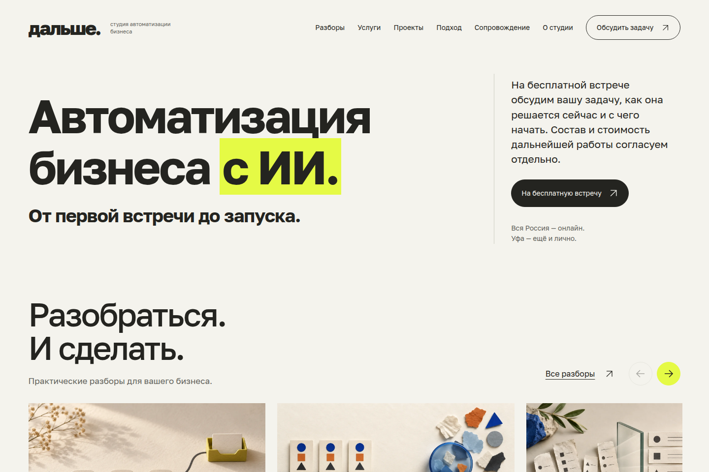
Студия «дальше.»
Многостраничный сайт: услуги, кейсы и статьи. Приём заявки через backend, хранение в SQLite и отдельный worker уведомлений в Telegram. Семантика страниц, SEO и производственная сборка.
Открыть живой сайт ↗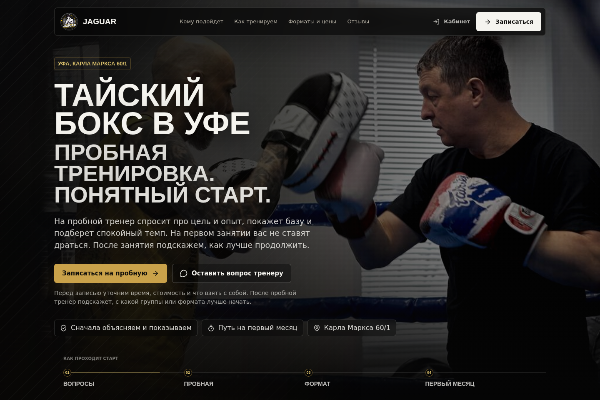
Школа «ЯГУАР»
Лендинг на React / TypeScript. Адаптивный интерфейс, FAQ и форма заявки в CRM. Метрика, SEO, проверки сборки и мобильных сценариев перед выкладкой.
Открыть живой сайт ↗Что входит в мою работу
Структура и тексты под задачу бизнеса, пользовательский путь, интерфейс, обработка формы, интеграции и проверка перед размещением. Сайт рассматриваю как начало рабочего процесса: обращение должно попасть в систему и стать понятным следующему исполнителю.
Скриншоты публичных страниц сняты 30.09.2026. Оба сайта открыты при подготовке кейса. Реальные заявки этим просмотром не создавались; текущая доставка уведомлений отдельно не проверялась. Исходники сайтов остаются закрытыми.
Полный цикл виден
по результатам работы.
- РазобратьсяПользователи, текущий процесс и ограничения.
- ЗафиксироватьТребования, правила, границы и критерии готовности.
- СобратьBackend, интерфейс, данные и интеграции.
- ПроверитьСценарии, ошибки, повторы и реальные экраны.
- ЗапуститьРазмещение и поэтапное внедрение в рабочий процесс.
- ПередатьДокументация, проверки и понятные следующие шаги.
Внедрение подтверждено для отдельных рабочих решений. Прототипы и незавершённые части обозначены в своих кейсах.